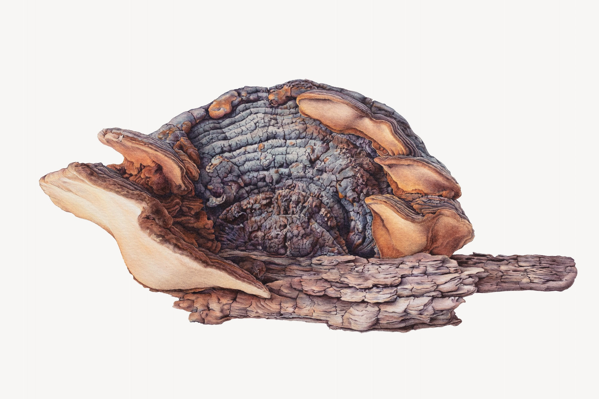
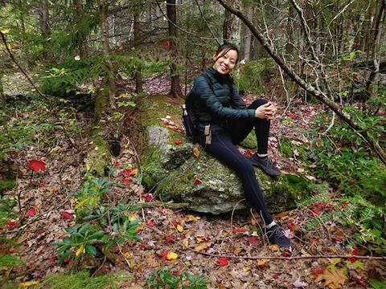
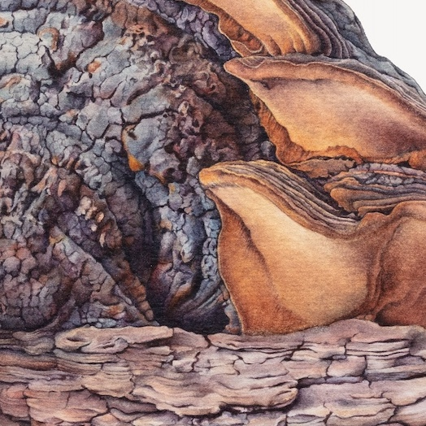
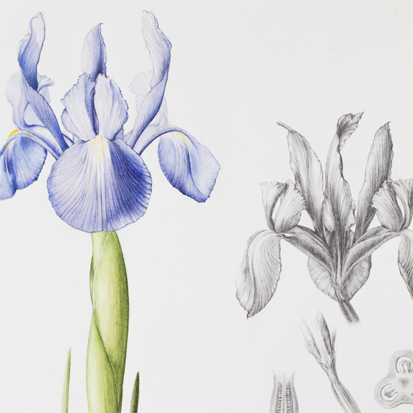
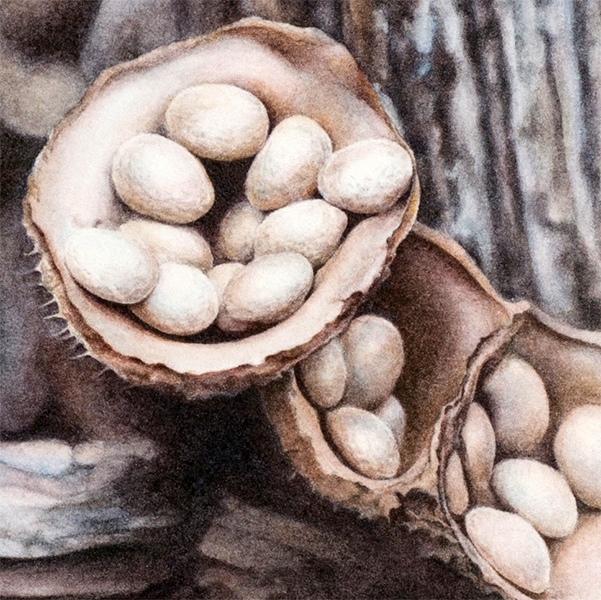
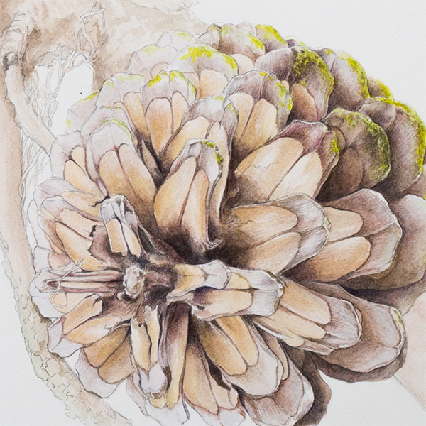

Try next: "open the mobile nav menu on one screen" · "make the mobile home hero taller/shorter" · "combine everything into one clickable prototype"



Try next: "make the gallery captions smaller" · "show mobile versions of the other pages"

Try next: "carry 1a through all pages" · "mix 1b's hero with 1a's palette" · "show the classes page in each direction"